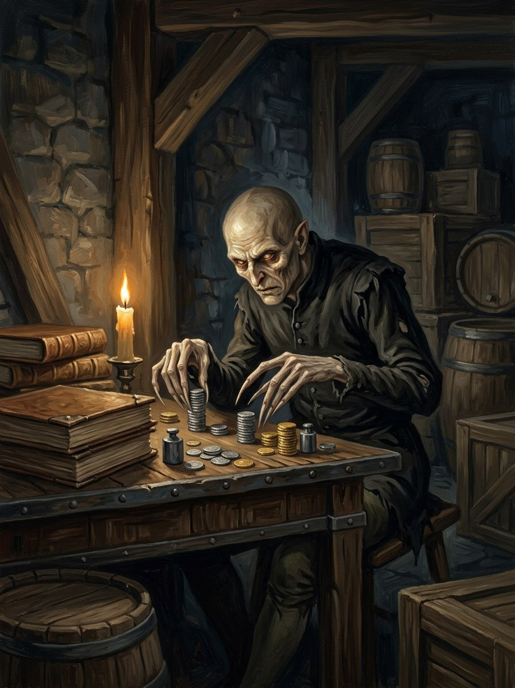

Skaičiuotojas (the Counter)¶
Folk source [Historical record]¶
[The saga’s invention.] No folk source; it is the saga’s face of the ledger-age: tolls, counting-houses and land sold by the furlong.
Skaičiuotojas (the Counter)

Skaičiuotojas (the Counter) · creature¶
Type |
creature |
Status |
The saga’s invention |
Note |
Bestiary §28. The saga’s invention. Danger III after 1387. |
In the saga (where the folk are half-wrong)¶
A spirit of the Gold-Glutton, formed wherever ledgers, tolls and land sold by the furlong gather: tollhouses, counting-rooms, the Order’s commanderies, Hanseatic factories. A voice, never a body, that counts: the coins in the room, then the goods, then the people, then the years each person has left, in a soft monotone. Those who listen too long begin to see one another as sums. It does not kill; it empties people out, leaving them prosperous and hollow.
Signs & habitat¶
Coins that are always warm; a voice under the floor of a counting-house; merchants who have stopped caring for their children and cannot say why.
Before / after the Unbinding¶
Before: confined to Order and Hanseatic towns. After: everywhere money changes hands; dominant in Book IV.
Banes, wards, bargains, and their cost¶
An unmeasured gift: giving something away without counting it (the reverse of the laumė’s linen) silences the Counter in that room, though it makes counting feel like breathing. Fill the room with song, since counting and singing cannot share a room.
Danger level¶
III dangerous (after 1387).
Story hooks¶
Book I ch. 28: the Hanseatic envoys bring it into Vilnius. Book IV ch. 1 and 18: it speaks under the floor after the war and numbers the gems of the crown at Lutsk.
Relations
Servant of: Aukso Rijūnas (Mercator-Rex)
Origin [The saga's invention] a spirit of the Gold-Glutton, formed where ledgers, tolls and land sold by the furlong gather
Tier Voice · Aukso Rijūnas's servant, never a body
Danger III dangerous (after 1387)
Habitat Tollhouses, counting-rooms, Order commanderies, Hanseatic factories; the Lutsk congress chamber
Wants To count
Takes Care: those who listen too long begin to see one another as sums, and are left prosperous and hollow. It does not kill
Signs Coins that are always warm; a voice under the floor of a counting-house; merchants who have stopped caring for their children and cannot say why
Banes An unmeasured gift; song
Half-wrong truth. No folk belief to correct. Soft and pleasant, it counts the coins in the room, then the goods, then the people, then the years each has left.
Spread. Before 1387 confined to Order and Hanseatic towns. After it, everywhere money changes hands, dominant in Book IV.
Counting aloud. In a soft monotone, until the listener counts too.
Vytautas. Hears it for thirty years and learns to carry it like a pebble in the boot (Book IV ch. 16).
The unmeasured gift. Giving something away without counting it silences the Counter in that room. You must truly not count, and it makes counting feel like breathing.
Song. Counting and singing cannot share a room. Merchants rarely sing.
Connections¶
graph LR
gold_glutton["Aukso Rijūnas (Mercator-Rex)"]
skaiciuotojas["Skaičiuotojas (the Counter)"]
skaiciuotojas -->|Servant of| gold_glutton
style skaiciuotojas stroke-width:3px